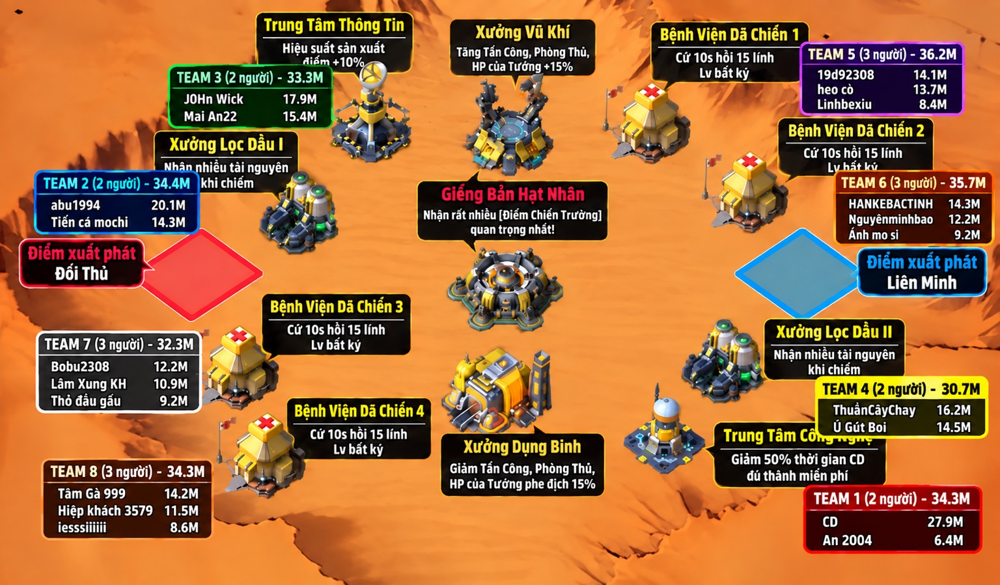

👥 Đội hình Team B
Danh sách thành viên và vị trí được phân công trong trận. Hãy kiểm tra đội hình trước khi vào chiến trường.

🧠 Tư duy khi gặp đối thủ mạnh
Mục tiêu không phải là cố giết bằng được nhà địch. Mục tiêu là giữ quân, thăm dò thực lực và khiến đối phương hao quân nhiều hơn mình.
🛡️ Giữ quân
Bay nhà không đáng sợ. Hết lính mới đáng sợ. Đừng đốt quân vô nghĩa ngay từ đầu.
👀 Đọc chiến báo
Trước khi phản công, xem lực chiến, đội hình, tướng và thương vong của hai bên.
🎯 Chọn mục tiêu
Ăn được thì đánh. Không ăn được thì né, chuyển sang cứ điểm hoặc hỗ trợ đồng đội.
⚔️ 10 mẹo giao tranh thực chiến
Gặp địch mạnh → TẮT THỦ THÀNH
Khi xác định đối phương mạnh hơn, tắt thủ thành để tránh bị đốt sạch quân trong căn cứ.
Đừng vội đánh — hãy đọc chiến báo
- Đội 1 của địch bao nhiêu lực chiến?
- Đội hình và tướng nào?
- Tỉ lệ thương vong hai bên?
- Đó là đội chính hay đội phụ?
Địch đưa đội chính ra ngoài → kiểm tra nhà
Nếu đội mạnh nhất đang hành quân bên ngoài, hãy kiểm tra căn cứ: nhà còn đội mạnh bảo vệ không?
Địch có 3–4 đội hành quân → THĂM DÒ
Dùng một đội có tướng cấp thấp / lực chiến thấp để kiểm tra. Mục đích không phải thắng mà là biết nhà đối phương có thủ hay không và thực lực phòng thủ.
Nếu nhà không có thủ → tận dụng cơ hội. Nếu có thủ → dừng lại, đọc chiến báo, không lao đội chính vào mù quáng.
Nhìn đội hình hành quân để đoán đội chính
Hãy ghi nhớ hình dạng đội hình mạnh nhất của từng đối thủ. Khi thấy biểu tượng đội hình đó xuất hiện trên bản đồ, coi như đội chính đang xuất chinh.
Địch giấu đội mạnh trong nhà → ĐỪNG CỐ ĐÁNH NHÀ
Bạn có thể ăn đội 2, đội 3, đội 4 nhưng nếu đội mạnh nhất vẫn nằm trong căn cứ và bạn chưa xử lý được nó:
Không ăn được đội chính → CHIẾM CỨ ĐIỂM
Dùng lợi thế cơ động để chiếm công trình, giữ cứ điểm và hỗ trợ đồng đội. Đối thủ mạnh không có nghĩa là bạn phải đứng yên.
Đừng cố “ăn nhà” — hãy làm địch hao quân
Ưu tiên ăn đội yếu → né đội mạnh → giữ quân → chiếm cứ điểm → ép địch phải giao tranh.
Không đánh được → chuyển mục tiêu ngay
Nếu khu vực có đối thủ quá mạnh: Teleport / di chuyển sang khu vực khác. Tìm đội yếu hơn, cứ điểm trống, đồng đội cần hỗ trợ hoặc công trình đang yếu phòng thủ.
BÁO CÁO THỰC LỰC ĐỊCH
Phát hiện đối thủ mạnh thì chia sẻ ngay trên kênh chat:
- 📍 Vị trí
- ⚔️ Lực chiến
- 👥 Đội hình
- 🚨 Có thủ nhà hay không
Nhờ vậy cả team biết ai cần né, ai có thể đánh và khu vực nào cần hỗ trợ.
🔎 Ví dụ đọc tình huống
Trường hợp A — Địch đưa đội 12M
Chiến báo cho thấy đội của bạn vẫn chịu được.
→ Không hoảng. Không chạy ngay. Tiếp tục quan sát.
Trường hợp B — Địch đưa đội chính 13M
Bạn không đánh nổi đội chính nhưng thấy nhà địch không còn lực lượng mạnh.
→ Kiểm tra nhà và tận dụng khoảng trống.
Trường hợp C — Đội chính vẫn nằm trong nhà
Bạn chỉ ăn được đội phụ.
→ Không cố nhà. Chuyển sang cứ điểm và hỗ trợ đồng đội.
Trường hợp D — Khu vực quá mạnh
Chiến báo liên tục bất lợi.
→ Rút, đổi mục tiêu, tìm nơi có lợi thế hơn.
🚀 Quy trình 6 bước — nhớ là đánh được
① TẮT THỦ
Không để địch đốt sạch quân trong nhà.
② THĂM DÒ
Xem đội 1 của địch mạnh đến đâu.
③ PHÂN LOẠI
Ăn được → đánh. Không ăn được → né.
④ SĂN ĐỘI PHỤ
Đánh đội 2, 3, 4 nếu có thể thắng.
⑤ DỤ ĐỊCH
Khi đội chính rời nhà → kiểm tra và đánh căn cứ nếu có cơ hội.
⑥ KHÔNG CỐ
Địch giữ đội mạnh trong nhà → bỏ nhà, đánh cứ điểm và hỗ trợ team.
📢 Nhắc nhanh trước khi giao tranh
Người giữ được quân đến cuối trận mới còn khả năng chiến đấu khi trận đấu thực sự quyết định.
Luôn báo vị trí • Báo lực chiến • Báo đội hình • Hỗ trợ nhau • Không lao vào chết vô nghĩa.